$$qf_commondoc_header.start$$ $$qf_commondoc_header.end$$
Introduction
$$startbox_info$$The data for this tutorial can be found in the example projects for the imFCCS Fit Plugin: $$plugin_info:examplesdir:imfccs_fit$$test_fccs_dna_fortutorial.qfp$$endbox$$
This tutorial shows how to create overview plots of an imFCCS measurement, which contain both ACFs (in green/red channel) and the crosscorrelation between them. The example we chose is a measurement of different mixing rations of single- and double-labeled DNA fragments (607bp, Alexa-488-, Alexa-594- and Alexa-488+594-labeled).
We will evaluate two measurements: one of a DL-only sample and one with a low fraction of DL (cAB:cA:cB=0.5:1:1). Note that the labeleing was not perfect, so also the DL-only sample contains single-labeled fragments of both colors!
After correlating the measurements to yield the green- and red-channel autocorrelation functions (ACF0, ACF1) and the two color crosscorrelation function (FCCS).
The project now contains three imagingFCS raw data records for each sample:

the demo project
Note that all files belonging to one measurement are painted with the same background color shade. This indicates that all these files are inside
one "RDR group" withing the project. This group feature allows to connect all files that belong together, so an evaluation can make use of this fact. Here
the imFCCS fit will know which ACF1 and FCCS belong to a given ACF0. In addition to the group, each RDR has an "RDR role", which indicates what type of
data is represented by the record (e.g. here: ACF0, ACF1 and FCCS). Both properties can be seen (and the group can be changed) in the "Properties" tab of the
raw data record:

For the measurement these settings were used:
- 330μs frametime on an EMCCD with EMGain 300
- 491nm and 561nm lasers with 25mW and 25mW overall power
- 565nm beam splitter
- 525/50 bandpass for green channel
- LP568 longpass filter for red channel
Tutorial: Simple overview plots
The simples way to get a plot of all correlation functions side-by-side is the following:
- load the project, mentioned above.
- double-click the first FCCS-record
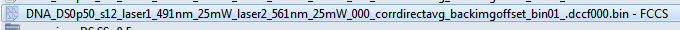
and choose the "Parameter Image" Tab.
- In the column on the rhs, scroll down to the section correlation plot styles.
- Choose selection display = FCCS display

- In this mode, QuickFit displays the FCCS-curve (blue) together with the green and red ACF in the lower left corner of the window. If you use the tool
 to select a range of pixels, QuickFit will calculate the average and standard deviation over all selected pixels and display the result. Here is an example:
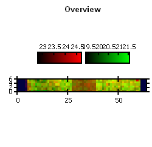
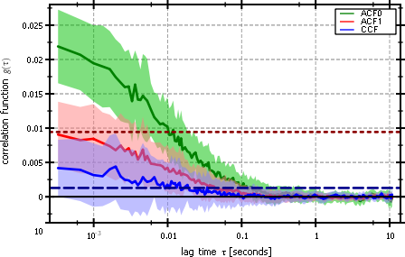
The horizontal lines are the amplitude of the red autocorrelation function, corrected foir the amount of cross-talk, given above. The blue line is the level of cross-correlation, that is explained by the cross-talk only. The correlation function levels are given by averaging over the first avg. lag times in of the correlation function (in the case above: 3). If you choose mode=corrected instead of mode=explained, then the blue line is the cross-talk corrected amplitude of the cross-correlation function.
to select a range of pixels, QuickFit will calculate the average and standard deviation over all selected pixels and display the result. Here is an example:
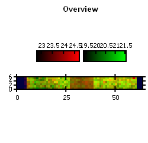
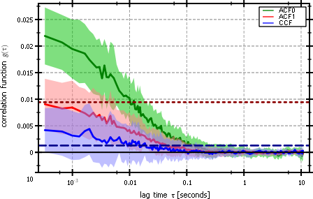
The horizontal lines are the amplitude of the red autocorrelation function, corrected foir the amount of cross-talk, given above. The blue line is the level of cross-correlation, that is explained by the cross-talk only. The correlation function levels are given by averaging over the first avg. lag times in of the correlation function (in the case above: 3). If you choose mode=corrected instead of mode=explained, then the blue line is the cross-talk corrected amplitude of the cross-correlation function.
- In order to save this plot for later, you can right-click on the plot and choose copy plot data to table RDR. Set the opening dialog as shown here:
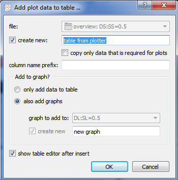
This will create a new table RDR in the project, which contains the data of the plot and the plot. The new RDR will be called "table from plotter".
Deprecated/Old Tutorial: create overview plots
First we will create simple overview plots that show the averaged ACFs and the averaged FCCS in one plot:
- open the ACF0 RDR of the first measurement and choose the "Parameter Image" tab
- First you can create a mask to mask out pixels that are not needed (because they are e.g. black):
- Select the pixels to mask out:
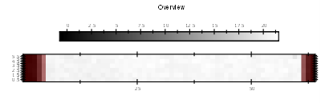
- click the "mask sel." button on the rhs or the menu entry "Mask|mask sel." (the curve on the bottom is the averaged ACF0 over all non-masked pixels):
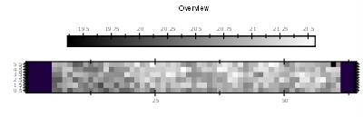

- Finally click on the menu entry "Mask|copy mask to all files in same group", which will set this mask also for the ACF1 and FCCS file!
- Repeat the same actions for the ACF0 RDR of the second measurement
- select some pixels in the overview image (e.g. using the rectangle tool):

- click on the menu entry "imagingFCS Tools|copy all CFs from group to table. A dialog like this will pop up:
 This will create a new table RDR which will contain the ACF0, ACF1 and FCCS (basically all imagingFCS RDRs in the same group as the current RDR),
averaged over the selected pixels as different columns (obe for the tau-axis one for the average and one for the standard deviation of each correlation curve)
and a plot showing these curves. In the dialog you can either select an existing table RDR from the current project or
have the function create a new one. Then you may also select whether to only copy the data into the table or to also create
the plot (again: if you selected a pre-existing table, you can also select a preexisting graph/plot to add the curves to).
If you set everything the way it is set in the image above, a new table with the name "overview: DS:SS=0.5" will be added and
a new graph in it will be created, which will have the name "compare ACFs & FCS". The result will look like this:
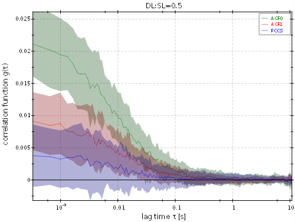
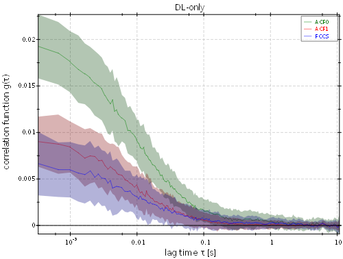
This will create a new table RDR which will contain the ACF0, ACF1 and FCCS (basically all imagingFCS RDRs in the same group as the current RDR),
averaged over the selected pixels as different columns (obe for the tau-axis one for the average and one for the standard deviation of each correlation curve)
and a plot showing these curves. In the dialog you can either select an existing table RDR from the current project or
have the function create a new one. Then you may also select whether to only copy the data into the table or to also create
the plot (again: if you selected a pre-existing table, you can also select a preexisting graph/plot to add the curves to).
If you set everything the way it is set in the image above, a new table with the name "overview: DS:SS=0.5" will be added and
a new graph in it will be created, which will have the name "compare ACFs & FCS". The result will look like this:
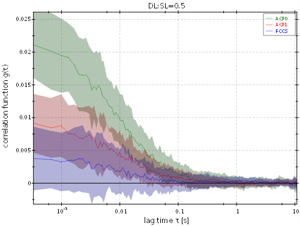
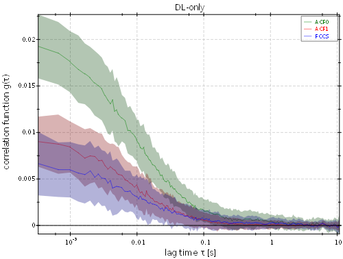